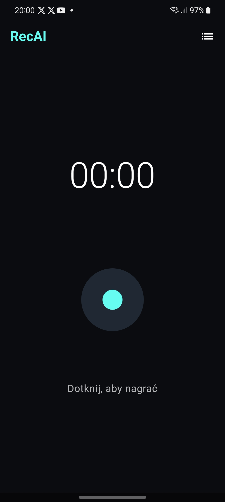
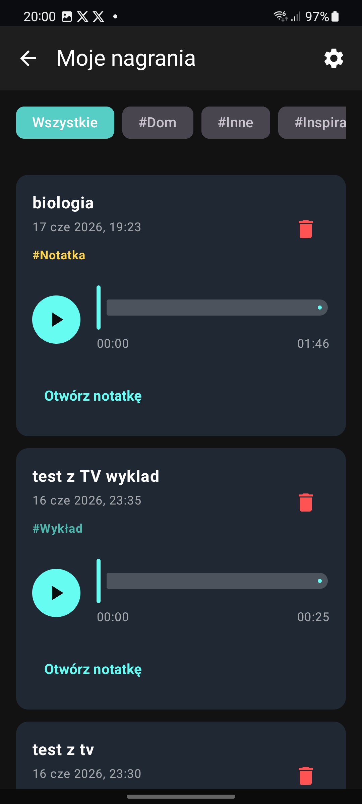
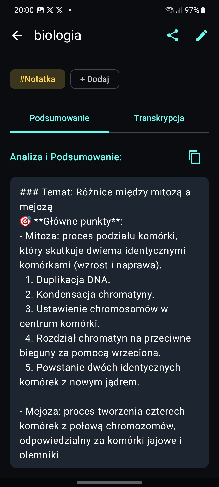
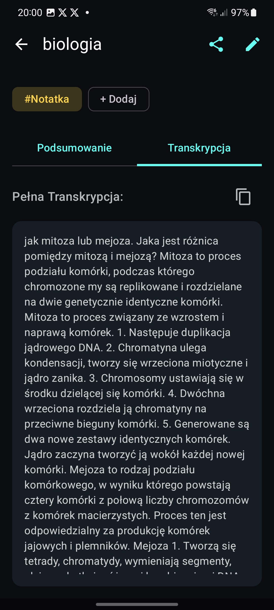
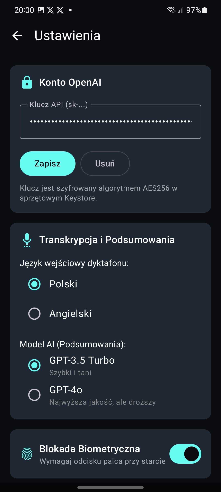
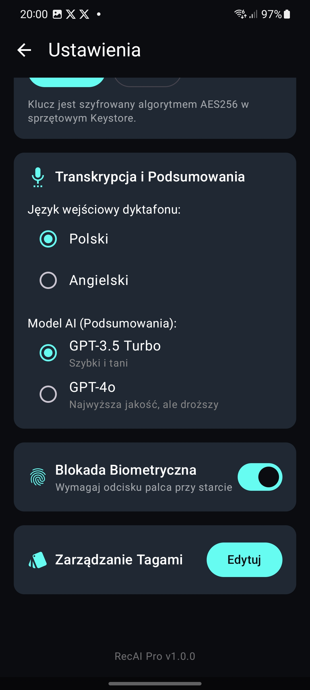
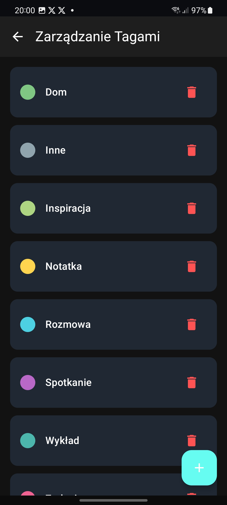
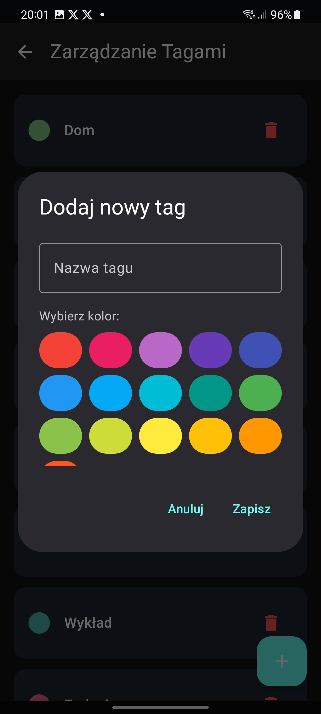

Zamieniaj nagrania w tekst i podsumowania bez chmury pośredników
Lokalny dyktafon na Androida z transkrypcją Whisper i sztuczną inteligencją GPT. Projekt w 100% hobbystyczny, stworzony dla zaawansowanych użytkowników (power-userów) ceniących prywatność. Wpisujesz własny klucz API OpenAI – Twoje dane trafiają bezpośrednio do dostawcy, bez pośredników.

Hobbystyczny Projekt Open Source
Stworzony dla maksymalnej prywatności power-userów
100% Prywatności i Szyfrowanie
Twój klucz API OpenAI jest szyfrowany za pomocą EncryptedSharedPreferences w bezpiecznym, sprzętowym Keystore systemu Android. Aplikacja łączy się bezpośrednio z serwerami OpenAI przez TLS. Brak serwerów pośredniczących twórcy aplikacji.
Projekt Offline-first
Nagrywanie, odtwarzanie (ExoPlayer), biblioteka oraz baza danych (Room SQLite) działają w pełni lokalnie i offline. Transkrypcja i podsumowanie są wykonywane na Twoje życzenie, a ich wyniki trwale zapisywane w bazie, by nie płacić ponownie.
Dla Power-Userów (Własne API)
Aplikacja powstała hobbystycznie. Zamiast płacić abonamenty pośrednikom, korzystasz z własnego klucza OpenAI API i płacisz grosze bezpośrednio dostawcy (Whisper: ok. 2.5 gr za minutę). Pamiętaj o zabezpieczeniu konta i ustawieniu limitów wydatków!
Wypróbuj w przeglądarce
Zobacz, jak RecAI przetwarza Twój głos
Kliknij przycisk odtwarzania poniżej, aby zasymulować nagrywanie i proces generowania notatek przez sztuczną inteligencję na żywo.
Uruchom demonstrację za pomocą przycisku po lewej stronie, aby rozpocząć symulację transkrypcji Whisper...
Instrukcja działania
Wygoda i bezpieczeństwo w 3 prostych krokach
Wprowadź swój klucz API
Po zainstalowaniu aplikacji wejdź w ustawienia i wklej swój własny klucz API OpenAI. Zostanie on zaszyfrowany i zapisany w bezpiecznym Keystorze urządzenia. Połączenie odbywa się bezpośrednio z API OpenAI (https://api.openai.com).
Nagrywaj w tle
Uruchom nagrywanie jednym przyciskiem. Aplikacja wykorzystuje systemowy Foreground Service z typem mikrofonu, dzięki czemu nagrywa stabilnie nawet po zablokowaniu ekranu czy przejściu do innej aplikacji.
Generuj transkrypcje i tagi
Kliknij przycisk „Otwórz notatkę”, a aplikacja prześle plik WAV bezpośrednio do Whisper API, a następnie GPT API, generując transkrypcję i podsumowanie w punktach. Przypisuj kolorowe tagi i wygodnie filtruj nagrania.
Nowości w wersji v1.2
Zaawansowane możliwości pod Twoją kontrolą
RecAI stale się rozwija, oferując elastyczność i bezpieczeństwo dostosowane do wymagań power-userów.
Blokada odciskiem palca
Zabezpiecz dostęp do swoich nagrań. Zaimplementowane wsparcie dla systemowego BiometricPrompt systemu Android wymaga weryfikacji odciskiem palca przed otwarciem biblioteki i ustawień.
Room DB Tag Manager
Tagi są teraz w pełni zorganizowane lokalnie w bazie SQL. Zarządzaj kolorami, edytuj nazwy oraz twórz własne kategorie za pomocą wbudowanego ekranu zarządzania tagami.
Konfiguracja Modelu i Języka
Ty decydujesz o kosztach i inteligencji analizy. Wybierz między ekonomicznym modelem GPT-3.5 a inteligentnym GPT-4o oraz dostosuj język analizy w locie.
Galeria Aplikacji
Zobacz RecAI w akcji
Zrzuty ekranu z aplikacji zainstalowanej na urządzeniu Android, prezentujące tryb ciemny i funkcjonalności.

Biblioteka nagrań
Odsłuch WAV
Transkrypcja
Podsumowanie AI
Ustawienia aplikacji
Zarządzanie tagami
Edycja kategoriiWażne ostrzeżenie dotyczące klucza API
Aplikacja RecAI jest projektem w 100% hobbystycznym i nie posiada własnego pośredniczącego serwera chmurowego. Wymaga to wprowadzenia własnego klucza API OpenAI.
Nieostrożne obchodzenie się z kluczem API (np. udostępnianie go osobom trzecim) lub brak limitów na koncie OpenAI niesie ze sobą ryzyko niekontrolowanych opłat. Aby zapewnić bezpieczeństwo finansowe, zalecamy bezwzględne ustawienie limitów budżetowych (Hard i Soft Limits) bezpośrednio w panelu OpenAI Billing przed rozpoczęciem korzystania z aplikacji.
Masz pytania?
Często zadawane pytania (FAQ)
Zdecydowanie nie! Aplikacja nie posiada własnego backendu. Komunikacja odbywa się bezpośrednio między Twoim urządzeniem z systemem Android a oficjalnymi serwerami OpenAI przez bezpieczne szyfrowanie TLS. Twój klucz API jest przechowywany w pamięci telefonu przy użyciu szyfrowania EncryptedSharedPreferences zintegrowanego ze sprzętowym Keystore systemu Android. Kod projektu jest w 100% otwarty (Open Source) na GitHubie, dzięki czemu każdy programista może zweryfikować brak ukrytego wysyłania danych.
Koszt jest uzależniony wyłącznie od cen cennika OpenAI i Twojego realnego zużycia. Dla modelu transkrypcji Whisper API cena wynosi $0.006 za minutę (około 2.5 grosza). Dla podsumowań tekstu modelem GPT-4o mini koszt to ułamki grosza za zapytanie. Nagranie trwające 30 minut to łączny koszt około 75 groszy bezpośrednio na Twoim koncie rozliczeniowym OpenAI. Aplikacja RecAI jest całkowicie bezpłatna i nie pobiera żadnych prowizji ani opłat subskrypcyjnych.
Aby zdobyć klucz API:
1. Zarejestruj się lub zaloguj na stronie platform.openai.com.
2. Przejdź do sekcji rozliczeń (Billing) i doładuj konto kwotą np. $5.
3. Wejdź w zakładkę „API Keys”, kliknij „Create new secret key” i skopiuj wygenerowany klucz.
4. Wklej skopiowany klucz w ekranie ustawień aplikacji RecAI.
Tak. Usługa nagrywania działa jako Android Foreground Service (usługa pierwszoplanowa) z trwałym powiadomieniem w pasku stanu i zadeklarowanym typem microphone (zgodnie z wymogami Google dla systemów Android 14+). Dzięki temu system operacyjny nie zabija procesu nagrywania, a aplikacja stabilnie zapisuje dźwięk w tle, nawet gdy ekran urządzenia jest wyłączony lub korzystasz z innych programów.
Wszystkie pliki dźwiękowe (w formacie WAV PCM 16kHz mono) są zapisywane w pamięci prywatnej aplikacji na urządzeniu (katalog files). Informacje o transkrypcjach, podsumowaniach i tagach znajdują się w lokalnej bazie SQLite obsługiwanej przez Room. Odinstalowanie aplikacji usunie wszystkie powiązane z nią nagrania z telefonu.
Klucz API jest jak hasło do Twojego konta OpenAI. Nigdy nie udostępniaj go innym ani nie publikuj w sieci. Choć RecAI szyfruje go lokalnie na telefonie przy użyciu EncryptedSharedPreferences (AES-256-GCM) i sprzętowego Keystora, powinieneś dodatkowo zabezpieczyć swoje konto OpenAI:
1. Przejdź do panelu OpenAI w zakładkę Settings -> Limits.
2. Ustaw limit wydatków (np. $5 lub $10 miesięcznie) w polu Monthly budget limits.
3. Włącz opcję powiadomień e-mail przy przekroczeniu określonego progu. Dzięki temu w 100% uchronisz się przed niekontrolowanymi kosztami.
RecAI to **projekt hobbystyczny stworzony dla power-userów** – zaawansowanych użytkowników, którzy chcą mieć pełną kontrolę nad swoimi danymi. Ponieważ aplikacja nie posiada własnych serwerów ani subskrypcji, wymaga odrobiny konfiguracji technicznej (wygenerowanie klucza API w OpenAI). Zyskujesz w ten sposób niezależność, brak opłat abonamentowych oraz absolutną prywatność swoich nagrań.
Pobierz RecAI już dziś
Uzyskaj pełną niezależność, bezpieczeństwo i kontrolę nad swoimi danymi audio. Aplikacja gotowa do instalacji bezpośrednio z pliku APK na Twoim telefonie z systemem Android.
Minimalne wymagania: Android 8.0 (Oreo, API 26) lub nowszy.